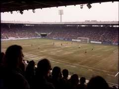
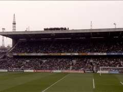
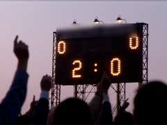

НЕФТЯНИК - ТУЛПАР 2:0 18.07.1999
photos of derby. Neftyanik - Tulpar 2:0
Фото сканировали у Вадика папы на работе. Если не видно - нажмите "Обновить" (Refresh) несколько раз, они большие и грузятся долго. У меня всё открывается!
If you don't see photos press Refresh some times, they are big and load long time. For me all is opening!
Наш баннер "ВЫШКА" - 6 метров, из трёх простыней! Мама Димона до сих пор не знает. |
 Беляев забивает 1:0 (23 мин). Его не очень видно, было далеко. |
 Восточная трибуна. Мы - вон там наверху (чёрные точки). |
Димон и барабан. Барабан из школы, вернули. |
 ТАБЛО 2:0 !!!!!! |
 Тулпаровские фаны на гостевой трибуне грустят :((( |
Фото с Таласа 11.04 будут когда Серёга проявит плёнку (уже 4 месяца...)
Фото с Таласа 17.10 не будет. Никогда.